AI 视频
按步骤了解如何进入页面、选择文生视频 / 图生视频 / 首尾帧，以及如何查看、下载和继续生成。
1. 进入页面与布局
登录后，在左侧导航中点击「AI 视频」，即可进入创作页。首页的「开始生视频」，以及 AI 生图结果上的「生成视频」，也会跳到这里。
页面分成左右两块：
- 左侧：选择模式、模型、参考图或首尾帧、提示词和参数，并提交任务。
- 右侧：查看最近的视频任务，播放结果，并对单条视频继续操作。
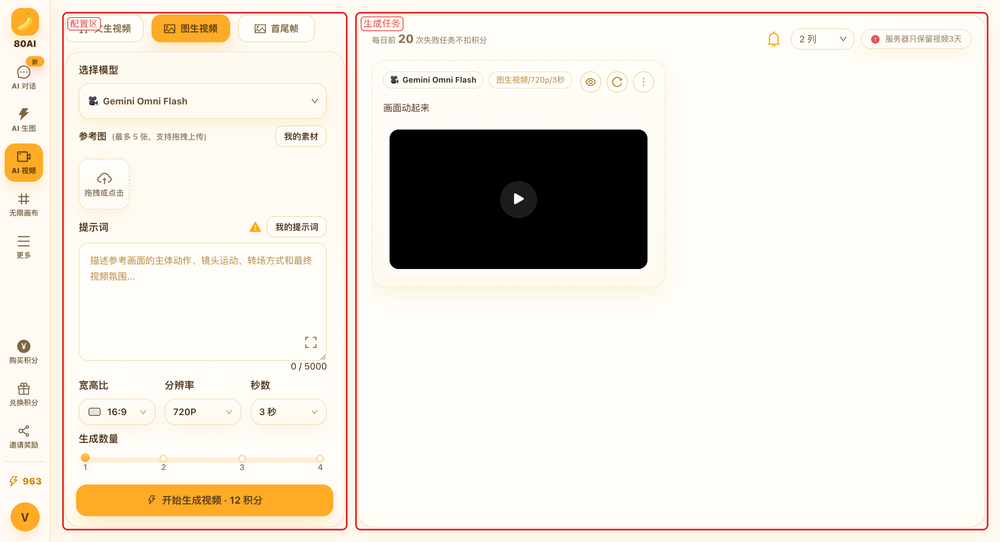
进入页面后的默认模式是「图生视频」。没有参考图时，先切到「文生视频」再提交。
2. 选择创作模式
左上角可以切换三种方式。切换后，可用模型和参考图区域会跟着变化。
- 文生视频：只写文字，直接出视频。适合先试镜头、氛围和动作。
- 图生视频：先放参考图，再写主体怎么动。适合把已有静帧延展成片段。这是默认模式。
- 首尾帧：分别上传开始画面和结束画面，让模型补中间过程。适合明确的起止构图。
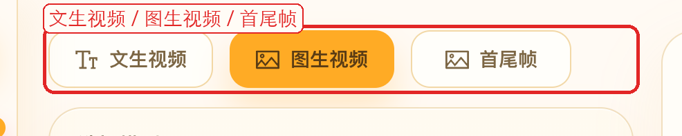
当前模型如果不支持参考图，带着图提交时会提示你切回文生视频。按提示切换即可。
3. 文生视频
适合从一句话开始试镜头，不必先准备图片。
- 切换到「文生视频」。
- 选择模型。不同模型支持的时长、比例和积分不一样。
- 在提示词里写清主体、动作、镜头运动和氛围。
- 选择宽高比、分辨率和秒数，再设一次生成几条。
- 点击「开始生成视频」。按钮上会显示本次预计积分。
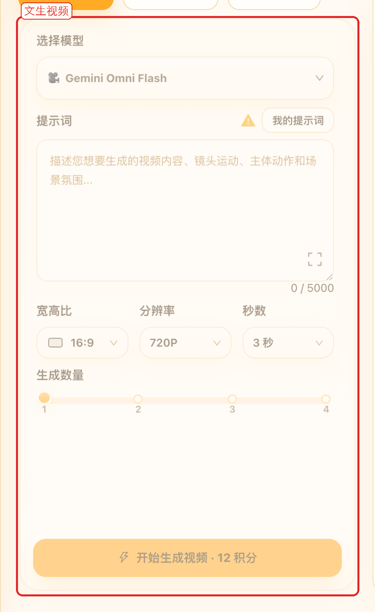
提示词尽量写「谁在做什么、镜头怎么走」，比只写风格词更容易出稳定动作。
4. 图生视频
适合把一张已有图做成动态片段，例如商品转动、人物微动、镜头推进。图生视频必须先有参考图。
- 切换到「图生视频」。
- 上传参考图：支持点击、拖拽。也可以从「我的素材」选用已保存的图。
- 写明主体怎么动、镜头怎么走，以及希望保留什么。
- 按需要调整模型、比例、分辨率和秒数，再提交。
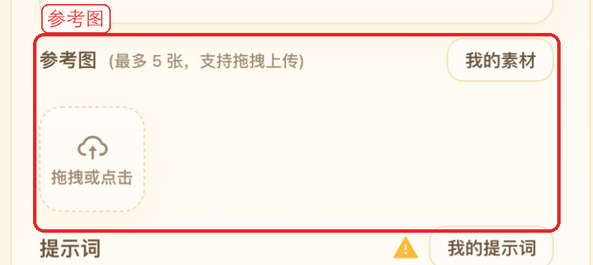
参考图数量上限由当前模型决定，单张不超过 20MB。上传成功后，可以把常用图点「加入我的素材」。
当前对真人参考图的支持还不够稳，拦截或失败的概率会更高。商品、插画、静物通常更合适。
5. 首尾帧
已经想好开头和结尾时，用首尾帧比只丢一张参考图更准。必须同时上传首帧和尾帧。
- 切换到「首尾帧」。
- 左边上传首帧，右边上传尾帧。两边都可以从「我的素材」选用。
- 描述从首帧到尾帧之间的动作、镜头变化和中间过程。
- 选择支持首尾帧的模型，再设比例、分辨率和秒数。
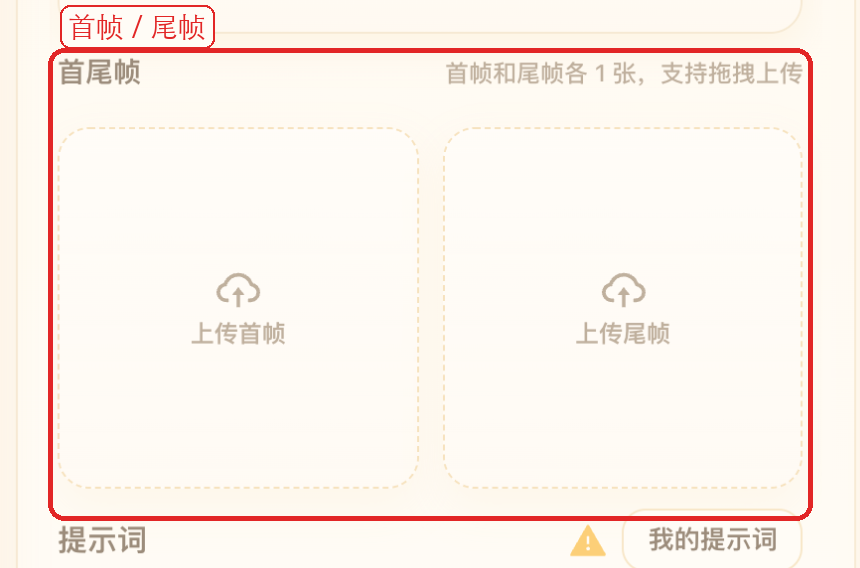
首尾两张图的构图尽量接近，主体位置不要差太多，中间过渡会更顺。
6. 模型与参数
切换模式后，模型列表只会留下当前模式可用的项。不确定时，先看模型名称后的说明。
- 选择模型：按质量、速度和积分来选。部分模型按秒计费，部分按分辨率计费。
- 宽高比：决定画面横竖。从生图结果带过来时，会尽量沿用原图比例。
- 分辨率：更高更清晰，通常也更耗积分。有的模型会隐藏这项。
- 秒数：控制片段长短。按秒计费的模型，秒数越长积分越高。
- 生成数量：一次可发 1 到 4 条，积分按条数相乘。
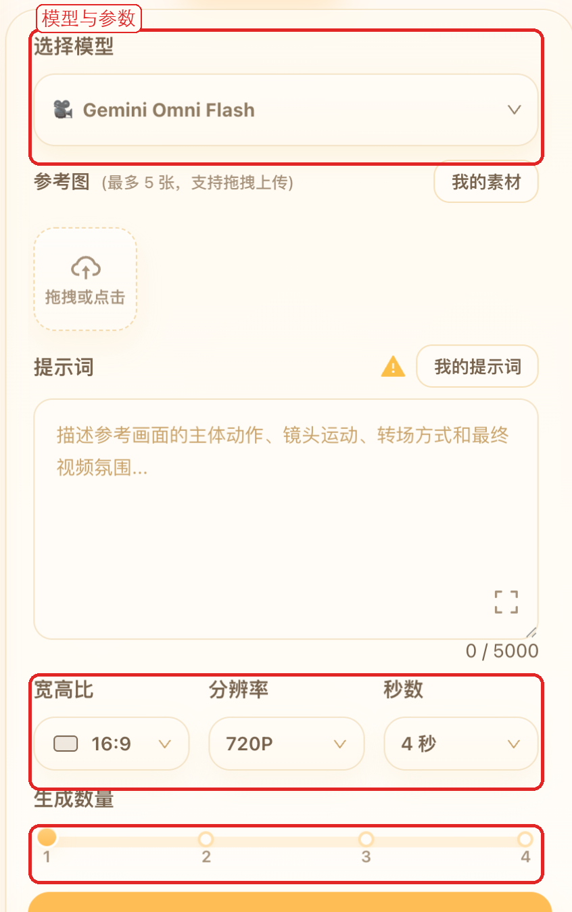
7. 提示词与素材
提示词框附近还有几个常用辅助功能：
- 我的提示词：保存和复用常用写法，也可以把当前提示词一键加入。
- 放大编辑：把提示词放到更大的编辑区里改。
- 拦截说明：提示词旁的说明会告诉你哪些内容更容易被拦截。
- 我的素材：图生视频和首尾帧都可以从素材库选图，不用每次重新找文件。
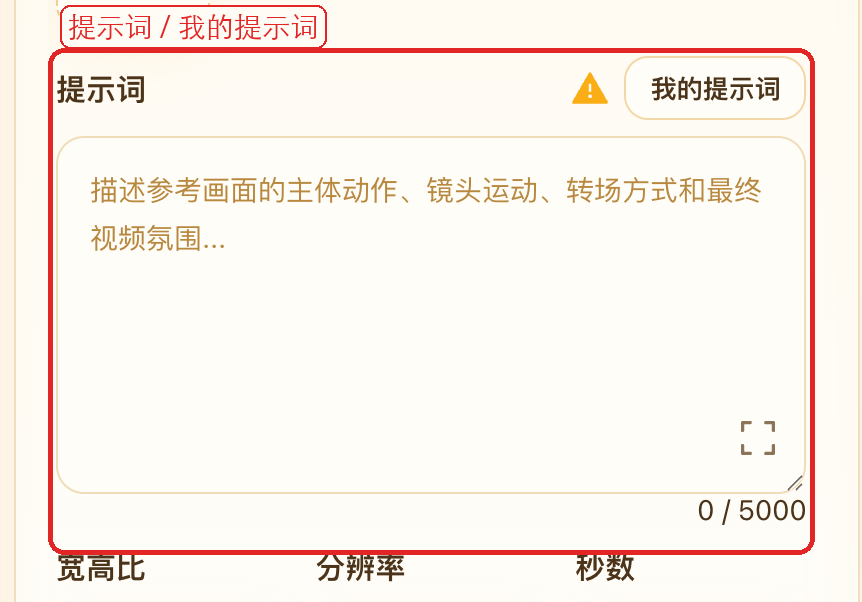
生图页、视频页和画布共用「我的素材」。满意的静帧先存起来，之后做视频会更快。
8. 开始生成
参数准备好后，点击左下角「开始生成视频」。按钮上会显示本次预计消耗的积分。积分不足时，按页面提示购买或兑换即可。
- 提交后，任务会出现在右侧，显示排队或生成中。
- 左侧内容不会被清空，可以马上改提示词或参考图，再发下一条。
- 一次最多 4 条。每天前 20 次失败通常不扣积分，具体以页面提示为准。
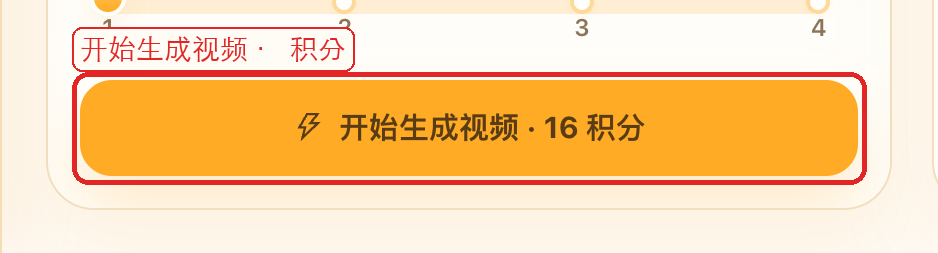
9. 查看与处理结果
右侧会列出最近的视频任务。卡片上能看到模型、秒数、提示词和播放画面。右上角可以改成 2 列或 3 列。
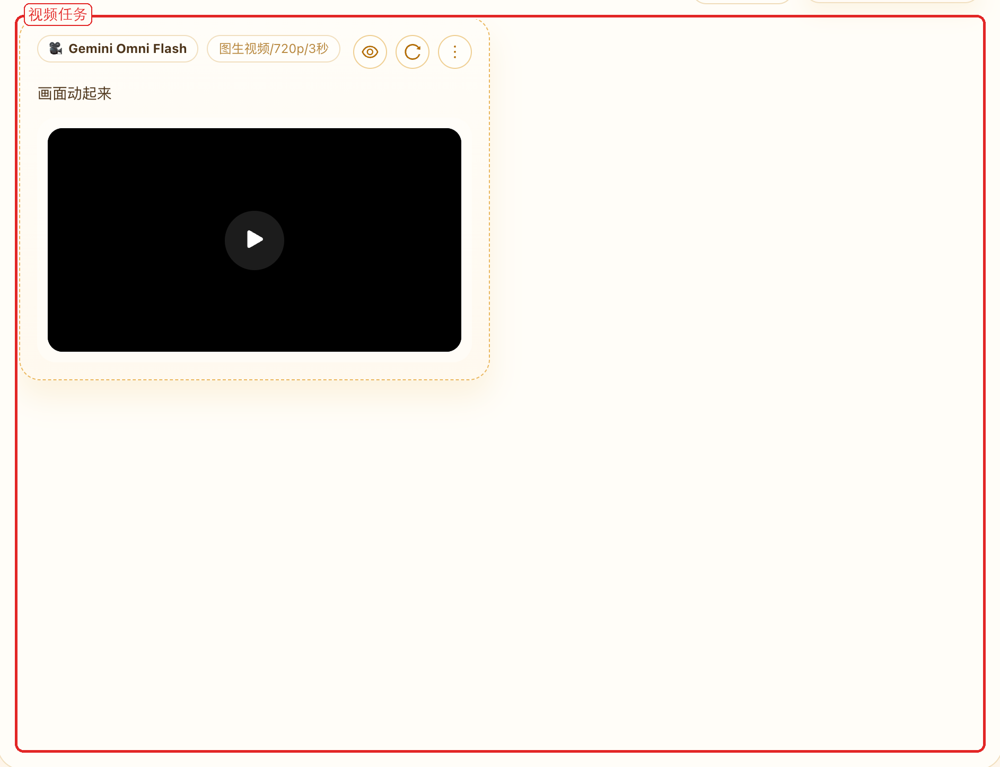
每条任务可以继续处理：
- 播放：点画面中间的播放按钮。
- 查看详情：看完整参数和结果。
- 回填参数：把这次的模式、提示词、参考图和参数填回左侧，再改一版。
- 下载原视频：保存到本地。
- 反馈：结果有问题或不符合预期时，可以直接提交。
- 删除任务：从列表移除这条记录。
服务器只保留视频 3 天，比生图的 15 天更短。满意的结果建议马上下载。
10. 从生图结果生成视频
已经有一张满意的静帧时，不必重新找文件。把鼠标移到 AI 生图结果上，点「生成视频」，会跳到视频页并带入这张图。
- 历史图片里，符合条件的结果也可以点「生成视频」。
- 无限画布里，选中图片节点后点「生成视频」，会在画布底部切到图生视频。
- 带过来的图会进入「图生视频」。补上动作说明后即可提交。
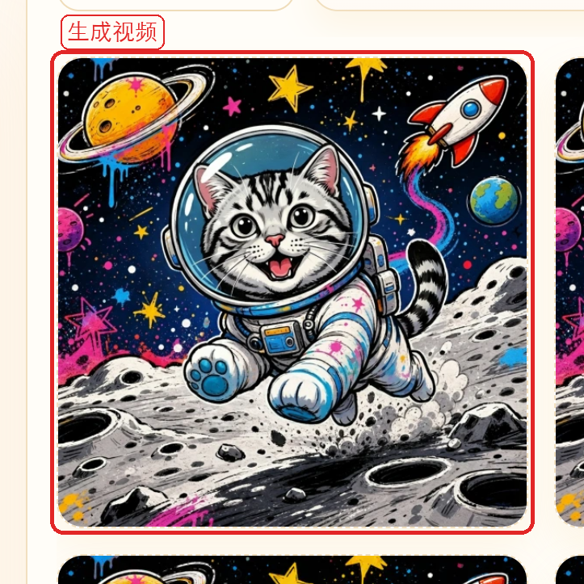
11. 使用建议
- 先出一张满意的静帧，再用图生视频，通常比纯文生视频更容易控制主体。
- 提示词写动作和镜头，少堆风格词。例如「镜头缓慢推进，衣服随风轻摆」。
- 需要明确起点和终点时，用首尾帧；只想让一张图动起来，用图生视频。
- 真人参考图更容易失败，优先用商品、插画或已经通过审核的静帧。
- 视频只保留 3 天，定稿后立刻下载。
- 多轮对比、分支试错时，也可以在无限画布里继续生视频。
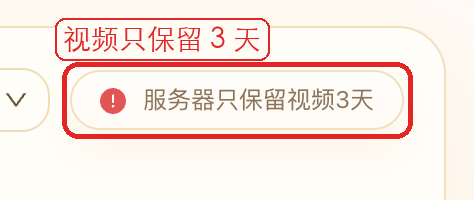